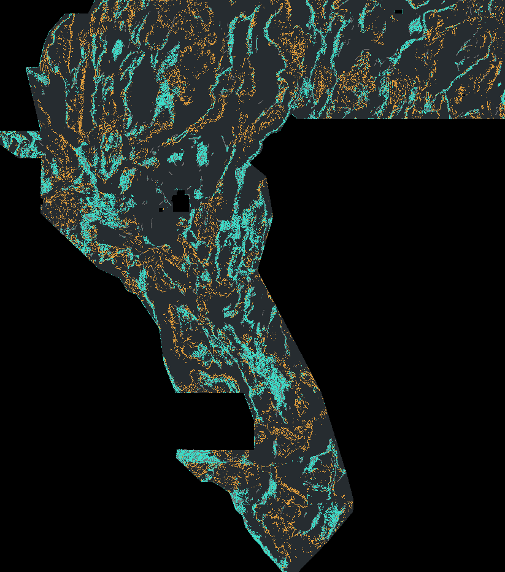

WBG-3 Executive Summary
⛔ DO NOT SUBMIT YET
The new unique file below is safe to download and format-valid, but it has not beaten the holdout benchmark (0.1382 vs 0.1661). Estimated leaderboard score 0.21 [0.17–0.26] (MODEL-ESTIMATE), below the champion's reported 0.2778. Do not spend a weekly slot on it unless you, as selector, accept that estimate.
Download
⬇ wbggemsdoe1-wbg3-exp3det-clear2-37654-20261027T200705Z-zeros.tif · one-TIFF ZIP ↓
sha256 30901f894a84f6150a65a86e6556d3b4d3b3f5054dd4f8f3b597d754115447c1 ·
single-band float32 · EPSG:32611 · 3730×3292 · values in [0,1] · no NaN ·
37,654 dots · automated validator: PASS (no human inspector needed).
Portal note: WBG-3 supervised multi-physics detector, dotted clear2 37654, zeros no NaN
Decision table
| File | Estimated score | Unique vs 9 focus sites? | Submit? |
|---|---|---|---|
| WBG-3 (this session) | 0.21 [0.17–0.26] MODEL-ESTIMATE | YES — max overlap 43.1%, max |ρ| 0.036 | NO — not yet |
| WBG-2 (previous) | retracted (estimator invalid) | Yes | NO |
| GEMSDOE32 champion | 0.2778 OWNER-REPORTED | is a focus site | NO — already submitted; copying = duplicate |
| GEMSDOE36 / 28 / 31 / 33 / 25 / 30 / 24 / 27 | 0.2750 / 0.2710 / 0.2708 / 0.2632 / 0.2600 / 0.2600 / 0.2477 / 0.2449 OWNER-REPORTED | focus sites (25≡30 identical dots) | NO — historical |
Official leaderboard observed 2026-10-27: rank 1 = 0.4544 — leaderboard.
Why 0.2778 won
The scored truth is expert-mapped faults not in the USGS catalogue (official problem page). The champion is a strict deletion subset of the 44,090-dot D2.8 field: exactly 6,436 dots removed, all within 200 m of the catalogue, zero added. The gain was precision pruning of catalogue-tracing dots, not new detection. All nine focus artifacts are one nested family (98–100% overlaps), so none is unique for us.
Map

Teal: WBG-3 (this session). Orange: GEMSDOE32 champion. Grey: mapped catalogue. Downsampled 4x, max-pooled.
Evidence
- HOLDOUT-DTI 0.1382 [0.1257, 0.1520], evaluator
gems-segment-pooled-v1, 60,988 withheld positives — best reproducible detector here (Exp2 0.1320, B0 0.1039, TIP1 0.0824); benchmark S3DEP1 0.1661 not beaten, paired replay unavailable. - Leakage canary: max feature AUC 0.598 (< 0.90). A catalogue-distance leakage bug (IR-WBG3-01) was found, fixed, and rerun.
- Full run card: evidence/wbg3/run_card.json · Markdown summary: wbg3-executive-summary.md · Hypotheses: research/04
- Competition slots used: 0. Organizer-confirmed scores: none.